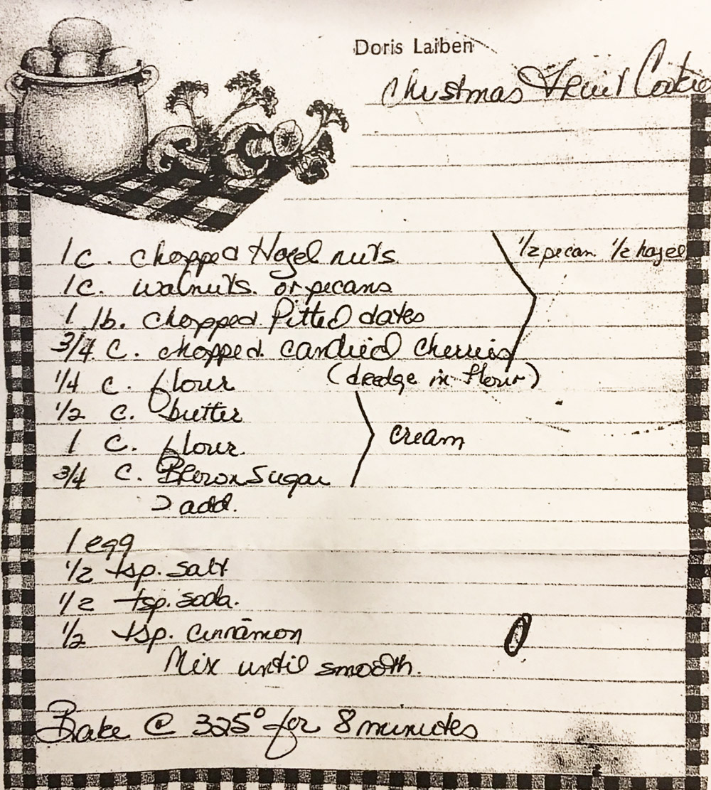

From Doris Laiben

Fruitcake — and its cousin, the fruit cookie — has a long Christmas association in Europe and America. The form descends from medieval and early-modern preserved-fruit cakes (German stollen, Italian panforte, English plum cake), all of which used dried and candied fruit and nuts as a way to make sweets that would keep through winter. In the 19th and early 20th century, the addition of brightly dyed candied cherries — neon red and green — became a uniquely American flourish, made possible by the industrial production of glacé cherries and a Christmas color palette to match.
What makes this version a cookie rather than a cake is the very short bake time (8 minutes at 325°) and the high fruit-to-batter ratio: a pound of dates, plus nuts and cherries, held together by just a half cup each of flour and butter. The "dredge in flour" note next to the fruit is the key technique — coating sticky fruit in flour before folding it in keeps the pieces from clumping or sinking. The recipe is attributed to Doris Laiben, which (along with the printed kitchen-tile border) places it in a mid-twentieth-century American home cookbook tradition, the kind of recipe that circulated between neighbors at church suppers and in community cookbooks.